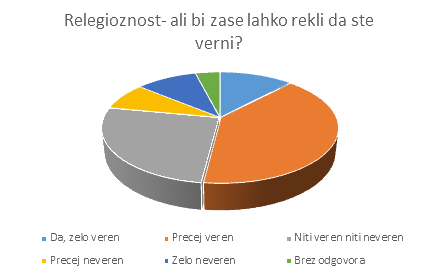

1. Religioznost - Ali bi zase lahko rekli, da ste verni?
a) Da, zelo veren
b) Precej veren
c) Niti veren niti neveren
d) Precej neveren
e) Zelo neveren
f) Brez odgovora
Vseh udeležencev v anketi je bilo 50. Na dane odgovore so odgovarjali tako:
- Z odgovorom »Da, zelo veren« je odgovorilo 6 ljudi kar predstavlja 12% vseh tistih, ki so odgovorili na to vprašanje.
- Z odgovorom »Precej veren« je odgovorilo 20 ljudi kar predstavlja 20% vseh tistih, ki so odgovorili na to vprašanje.
- Z odgovorom »Niti veren niti neveren« je odgovorilo 13 ljudi kar predstavlja 26% vseh tistih, ki so odgovorili na to vprašanje.
- Z odgovorom »Precej neveren« so odgovorili 4 ljudje kar predstavlja 8% vseh tistih, ki so odgovorili na vprašanje.
- Z odgovorom »Zelo neveren« je odgovorilo 5 ljudi kar predstavlja 10% vseh ljudi, ki so odgovorili na to vprašanje.
- Z odgovorom »Brez odgovora« sta odgovorila 2 človeka ki predstavljata 4% vseh ljudi, ki so odgovorili na to vprašanje.
Z odgovori udeležencev ankete lahko potrdimo, da so našo anketo reševali predvsem verni ljudje. To je vplivalo tudi na ostale odgovore v anketi, saj se veliko anketirancev, ki pa ni nujno da so vsi bili verni, ne strinja z legalizacijo prostitucije v Sloveniji. S tem lahko sklepamo, da verni ljudje večinoma ne podpirajo prostitucije in tako potrdile našo hipotezo, da verni ljudje nasprotujejo legalizaciji prostitucije.
Nazaj